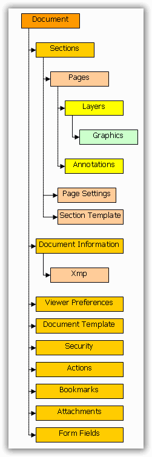

PdfDocument is a top-level object in Essential PDF, which is a representation of a PDF document. The document contains a collection of sections that are represented by the PdfSection class, which is a logical entity containing a collection of pages and their settings. Pages (which are represented by PdfPage class) are the main destinations of the graphics output.
 Note: A document should contain at least one
section with one page.
Note: A document should contain at least one
section with one page.
A page does not contain any self-settings, but it inherits them from its parent section instead. It means that all the pages in the same section have the same dimensions. If a new page with different settings has to be created, then a new section should be created. A document also has capabilities to specify page settings. When a new section is created, it inherits page settings from the parent document.
You can save a document either to a file or stream through its Save method.

Figure 25: DOM
PDF Document
It manipulates with general document properties and stores sections. By default, an empty PDF document is created with a single page.
PdfDocument class is used to create a PDF document. The following are the public members of the PdfDocument class.
Methods
|
Name |
Description |
|
AddFields |
Adds the fields connected to the page. |
|
Append |
Appends the specified loaded document to this one. |
|
CheckFields |
Checks what fields are connected with the page. |
|
Clone |
Creates a shallow copy of the current document. |
|
ClonePage |
Clones pages and their resource dictionaries and adds them into the document. |
|
Close |
Closes the document and releases the memory. |
|
DisposeOnClose |
Adds an object to a collection of the objects that will be disposed during document closing. |
|
GetForm |
Gets the form. |
|
ImportPage |
Imports a Page. |
|
ImportPageRange |
Imports a page range from a loaded document. |
|
OnDocumentSaved |
Raises DocumentSaved event. |
|
OnPageSave |
Called when a page is saved. |
|
OnSaveProgress |
Raises the [E:Progress] event. |
|
PageLabelsSet |
Informs the document that the page labels were set. |
|
Save |
Saves the document. |
Properties
|
Name |
Description |
|
Actions |
Gets the additional document's actions. |
|
Attachments |
Gets the attachments of the document. |
|
Bookmarks |
Gets the root of the bookmark tree in the document. |
|
Cache |
Gets collection of the cached objects. |
|
Catalog |
Gets the PDF document catalog. |
|
ColorSpace |
Gets or sets the color space for the page that will be created. |
|
Compression |
Gets or sets the desired level of stream compression. |
|
Conformance |
Gets or sets the Pdf Conformance level. Supported: PDF/A-1b - Level B compliance in Part 1. |
|
DefaultFont |
Gets the default font. It is used for complex objects when font is not explicitly defined. |
|
DisposeObjects |
Gets a list of the objects that have to be disposed after document closing. |
|
DocumentInformation |
Gets or sets document's information and properties. |
|
FileStructure |
Gets or sets the internal structure of the PDF file. |
|
Form |
Gets the interactive form of the document. |
|
Pages |
Gets the collection of the pages in the document. |
|
PageSettings |
Gets or sets default page settings of the document's sections. |
|
Sections |
Gets the collection of the sections in the document. |
|
Security |
Gets the security parameters of the document. |
|
Template |
Gets or sets a template that is applied to all pages in the document. |
|
ViewerPreferences |
Gets or sets a viewer preference object controlling the way the document is to be presented on the screen or in print. |
Events
|
Name |
Description |
|
DocumentSaved |
This event is raised when the document is saved. |
|
SaveProgress |
This event exposes the progression of the save state of the document. |
Section
· Contains pages with the same parameters.
· When new pages are added to the section, it obtains parameters from the section even if it was imported from another section or document.
· When a high-level graphic object needs to be drawn on more than one page, it adds a new page to the section of the start page from which the object starts, if required.
PdfSection class allows creating and managing sections. The following are the members exposed by the PdfSection class.
Methods
|
Name |
Description |
|
Add |
Overloaded. |
|
Clear |
Removes all the pages from the section. |
|
Contains |
Determines whether the page is within the section. |
|
DrawTemplates |
Draws page templates on the page. |
|
IndexOf |
Gets the index of the page. |
|
Insert |
Inserts a page at the specified index. |
|
OnPageAdded |
Called when the page is added. |
|
OnPageSaving |
Called when a page is being saved. |
|
Remove |
Removes the page from the section. |
|
RemoveAt |
Removes the page by its index in the section. |
Properties
|
Name |
Description |
|
Count |
Gets the count of the pages in the section. |
|
Document |
Gets the document. |
|
Item |
Gets the PdfPage at the specified index. |
|
PageLabel |
Gets or sets the page label. |
|
Pages |
Gets the pages. |
|
PageSettings |
Gets or sets the page settings of the section. |
|
Template |
Gets or sets a template for the pages in the section. |
Events
|
Name |
Description |
|
PageAdded |
This event is raised when a new page is added. |
Page
Represents a rectangular area where the user can draw something, attach annotations, and so on. Each page has layers. When a page is created, it has one default layer. You can create more layers and refer them by an index. Each layer is associated with a graphics stream and has its own graphics (PdfGraphics class).
PdfPage class is used to create a page. The following are the members exposed by this class.
Methods
|
Name |
Description |
|
CreateTemplate |
Creates a template from the page content and all annotation appearances. |
|
ExtractImages |
Extracts images from the given PDF page. |
|
ExtractText |
Extracts text from the given PDF Page. |
|
GetAnnots |
Gets the annotations array. |
|
GetClientSize |
Returns a page size reduced by page margins and page template dimensions. |
|
GetContent |
Gets the content of the page in form of a PDF template. |
|
OnBeginSave |
Raises BeginSave event. |
|
ResetProgress |
Resets the progress. |
|
SetProgress |
Sets the progress. |
|
SetSection |
Sets parent section to the page. |
Properties
|
Name |
Description |
|
Annotations |
Gets a collection of annotations of the page. |
|
Contents |
Gets array of page's content. |
|
DefaultLayer |
Gets the default layer of the page. |
|
DefaultLayerIndex |
Gets or sets index of the default layer. |
|
Dictionary |
Gets the page dictionary. |
|
Document |
Gets current document. |
|
Graphics |
Gets the graphics of the DefaultLayer. |
|
Layers |
Gets the collection of the page's layers. |
|
Orientation |
Gets the page orientation. |
|
Rotation |
Gets the page rotation. |
|
Section |
Gets the parent section of the page. |
|
Size |
Gets the size of the page. |
Events
|
Name |
Description |
|
BeginSave |
Raises before the page saves. |